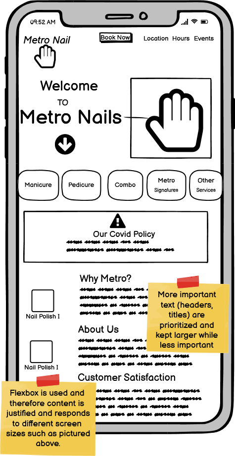

The purpose of this project was to find website that could use a makeover! I chose Metro Nails, a nail salon local to Providence, Rhode Island. The Metro Nails website performed poorly in areas of usability, learnability, and memorability . Furthermore, the site lacked a strong conceptual model to guide users and wasn't very accessible.
After exploring the usability of the current Metro Nails site, I went to Balsamiq Wireframes to create some lofi prototypes. Below are the three lo-fi prototypes, created using Balsamiq. The three wireframes are designed for a desktop, phone, and tablet, respectively. The prototypes are annotated with notes that mark the usability improvements.
After having constructed my lo-fi prototypes I created a visual style guide prior to constructing my hi-fi prototypes. The visual Style Guide is located below or you can find it here!

The final step before creating the actual redesign was to do my hi-fi prototyping. Your can find the hi-fi prototypes for a browser, tablet and phone below.
After finalizing the hi-fi prototypes, I translated the designs into a responsive, accessible website using semantic HTML, CSS, and lightweight JavaScript enhancements. The new site layout simplifies the user journey, with clearly defined navigation, mobile-friendly touch targets, and improved visual hierarchy.
Compared to the original Metro Nails website, the redesigned version significantly improved in the following areas:
While I did not conduct a formal usability study, informal feedback from peers and mentors indicated that the redesign felt cleaner, easier to navigate, and more visually appealing. The redesigned site now serves as a much stronger digital touchpoint for Metro Nails and better reflects the professionalism of their in-person experience.
Click below to explore the live redesign:
click here